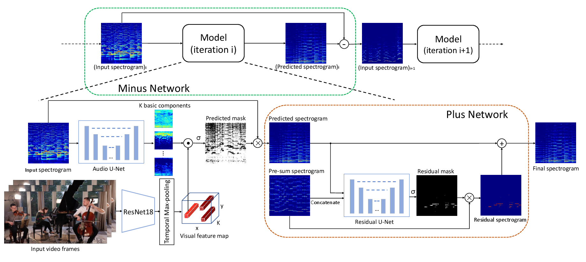

Recursive Visual Sound Separation Using Minus-Plus Net

Abstract
Sounds provide rich semantics, complementary to visual data, for many tasks. However, in practice, sounds from multiple sources are often mixed together. In this paper we propose a novel framework, referred to as MinusPlus Network (MP-Net), for the task of visual sound separation. MP-Net separates sounds recursively in the order of average energy, removing the separated sound from the mixture at the end of each prediction, until the mixture becomes empty or contains only noise. In this way, MP-Net could be applied to sound mixtures with arbitrary numbers and types of sounds. Moreover, while MP-Net keeps removing sounds with large energy from the mixture, sounds with small energy could emerge and become clearer, so that the separation is more accurate. Compared to previous methods, MP-Net obtains state-of-the-art results on two large scale datasets, across mixtures with different types and numbers of sounds.
Demo Video
Materials
Code

Citation
@inproceedings{xu2019recursive,
title={Recursive visual sound separation using minus-plus net},
author={Xu, Xudong and Dai, Bo and Lin, Dahua},
booktitle={Proceedings of the IEEE International Conference on Computer Vision},
pages={882--891},
year={2019}
}